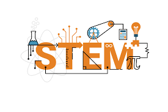
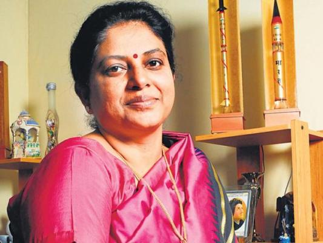

Studies show that when children are asked to draw a mathematician, they are twice as likely to draw a man than they are to draw women. This shocking revelation makes us question
In an ever-changing world, we require the youth of the nation to bring about changes using their problem-solving skills and knowledge for the development and progress of society.
STEM is an acronym for Science, Technology, Engineering and Mathematics, but it also involves an exhaustive list of subjects that fall under these broad categories such as computer science, psychology, statistician and so on. The demand for professionals in these fields currently is increasing now more than ever.
Unfortunately, there is a wide disparity between the number of men and women in these fields. Studies show that these fields are predominantly male-dominated. There is a major difference between the attitude of girls and boys towards these subjects.

Some of the reasons may include:
Girls feel underconfident as compared to the boys with regards to subjects like mathematics and science because they believe they don't possess the skill set required for pursuing these courses. Subjects like physics, chemistry and mathematics seem very masculine according to a lot of people. These subjects require logical reason and there is often the misconception that women possess more on the emotional front than on the logical front. Such stereotypes have clouded the judgement of several females from studying such subjects.
Women often face a large lack of support even if they do have interest in these fields. They are traditionally meant to stay at home and take care of the family and the children and not making that her priority would make her seem uncultured. They lack mentors and role models to guide them through the right path.
Another reason may be the difference in pay between male and female for doing the same work. Even if women do shatter the glass ceiling of patriarchy and go on to pursue these subjects, they get under-payed by a large amount which results in the lack of interest in the fields. Among more experienced scientists and engineers, the gender gap in salaries is greater than for recent graduates. Salaries are highest in mathematics, computer science, and engineering, which are fields in which women are not highly represented.
Currently, only 30% of the researchers of the world are women. There is under-representation in every part of the world.

How can we solve this?
- Firstly, we must eradicate the idea of any stereotype that exists that women are inferior in comparison to men in the matter of stem related subjects. From a very young age, we must enforce positive ideas into the minds of children such that they can feel free to pursue a career in whatever field they like, including, and not limited to the STEM fields. Since we know these stereotypes cannot be eliminated easily, women must be given a greater push to pursue these subjects.
- More women must be encouraged to act as a role model for students so that it eliminated the misconception that this field predominantly consists of men. Young children often learn what they perceive therefore it must be a good practice to portray the fact that females are equally as competent as males. They need mentors to guide them and examine their capacity and capability to lead young people into success. Time and time again women successful women have credited their success to their supportive mentors.
- There are several all-girl coding and tech camps which help in encouraging girls to gain an interest in technology and computers. These programs teach and explain the theoretical and real-world applications of these subjects. Interactive sessions which check your problem-solving skills, logic and reasoning seem more appealing to a large number of students.
Many private organizations fund the education of women to pursue these subjects if they have monetary problems. They offer up to the complete tuition fee for college for capable women. They have strategies to increase the representation of women in the computer and engineering fields.

Inspiring women:
As we are aware that there are several problems in the gender ratio in STEM fields, we must look up to women who overcame the issue and proved victorious making the rest of the world feel stumped. These women overcame all odds and challenges they may have faced in their lives and we must draw inspiration from them.
Marie Curie:
One of the most famous scientists to have ever lived, Marie curie faced a lot of hardships on her journey success. She lost her older sister and her mother at a very young age. Despite her familial losses, she never let this affect her academic success and was a very bright student. After graduating from school, she wanted to apply for her master's degree. There were very few colleges at the time that enrolled women for further studies. And even after she did find a college for her to get enrolled into (Sorbonne), she realized that her skills in mathematics and science weren't nearly as good as her fellow male peers. But she did not let this discourage her. Marie finished first in her master's degree physics course in the summer of 1893 and second in math the following year. Even though her family was financially poor, senior scholars recognized her talent and she received a scholarship. Despite having two daughters with her husband Pierre Curie, she worked conscientiously and the Curies, in 1903 received a Nobel Prize for their research with radium. She never stopped her research, even after her husband died in an accident. She took his place and then later received another Nobel Prize in 1911.In 1934 at the age of 67, she died from leukaemia, thought to have been from research. Marie would lead an exciting life receiving 15 gold medal awards, 19 degrees, and many other honours. Mary Curie has opened a lot of doors for young women today.

Tiera Fletcher:
The story if Tiera Guinn is very intriguing. She was from a regular middle-class family, her mother being an accountant, and her father being a construction worker. She had aspirations of being a scientist, inventor, architect, mathematician, and many other careers within the field of STEM. It was not until she became introduced to the field of aerospace engineering that she realized her true dream. She received an internship at NASA during senior year of high school. She graduated from Massachusetts Institute of Technology with a Bachelors degree in aerospace engineering. During that time she also worked in The Boeing Company which worked for NASA's Space launch system, as a Rocket Structural Design and Analysis engineer. She achieved a perfect score of 5.0 GPA + extra credit. She got married in 2017 to Myron Fletcher who also works at Boeing and they both strive to influence young people to join the STEM fields. Currently, she is one of the lead engineers and designers at NASA's Space Launch System which aims to put humans on Mars.
Tessy Thomas:
She is known as the "Missile Woman of India." This distinguished scientist obtained her BTech degree from Calicut university. She obtained her PhD in Missile guidance from Jawaharlal Nehru technological Institute. She grew up near Thumba Rocket launching station and her fascination for rockets began from there. Her family was not very financially secure so she had to take small loans to put herself through school and she also received a scholarship that covered her college tuition. She joined the Defence Research Development Organization (DRDO). She had been appointed by Dr APJ Abdul Kalam into the Agni program. After working for several projects, she was appointed as the Project Director for mission Agni IV. And it proved to be successful. Presently, she is leading the Aeronautical Systems Cluster Laboratories as Director-General.
She also happens to be the senior member of the Institute of Electrical and Electronics Engineering (IEEE).
